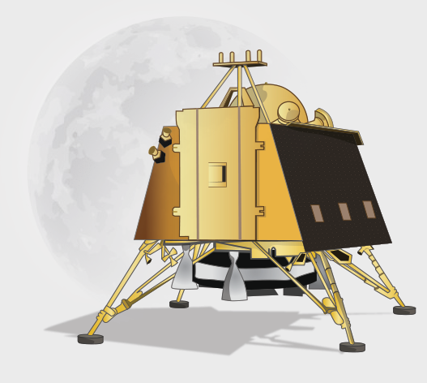

Chandrayan 2
Space Craft Info
Launcher
The GSLV Mk-III will carry Chandrayaan 2 to its designated orbit. This three-stage vehicle is India's most powerful launcher to date, and is capable of launching 4-ton class of satellites to the Geosynchronous Transfer Orbit (GTO).

Orbiter
Chandrayaan 2 Orbiter is capable of communicating with Indian Deep Space Network (IDSN) at Byalalu as well as the Vikram Lander. The precise launch and mission management has ensured a mission life of almost seven years instead of the planned one year.

Rover
Chandrayaan-2’s Rover was a 6-wheeled robotic vehicle named as Pragyan, which translates to 'wisdom' in Sanskrit.

Lander
The Lander of Chandrayaan-2 was named Vikram after Dr Vikram A Sarabhai, the Father of the Indian Space Programme. It was designed to function for one lunar day, which is equivalent to about 14 Earth days.
